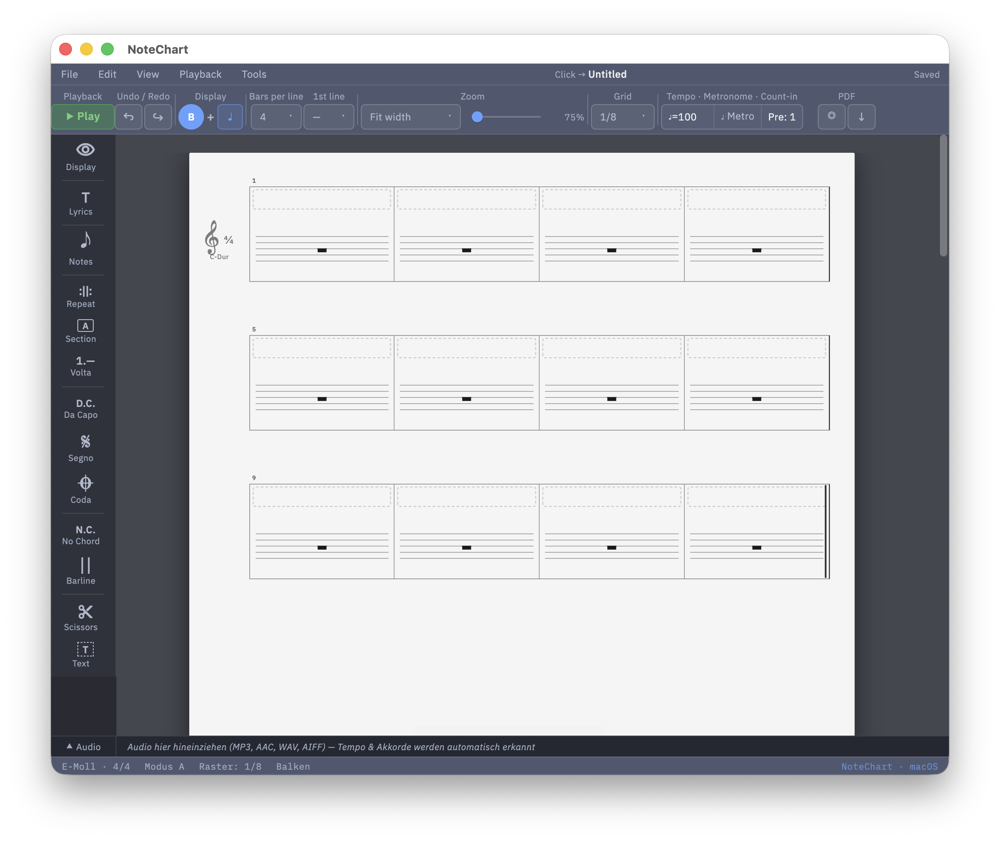
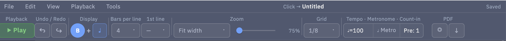
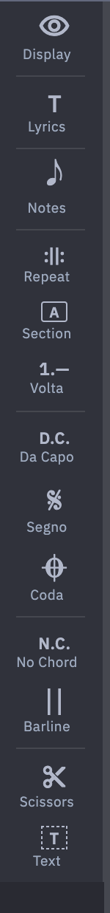
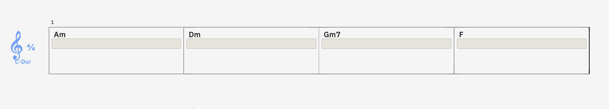
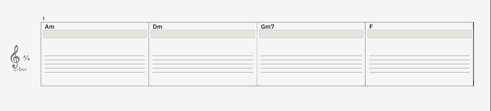
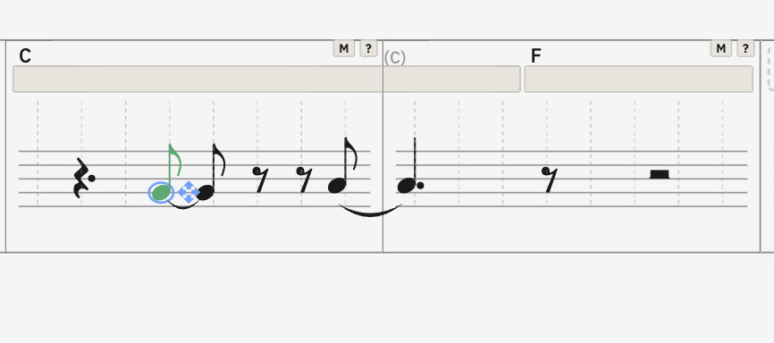
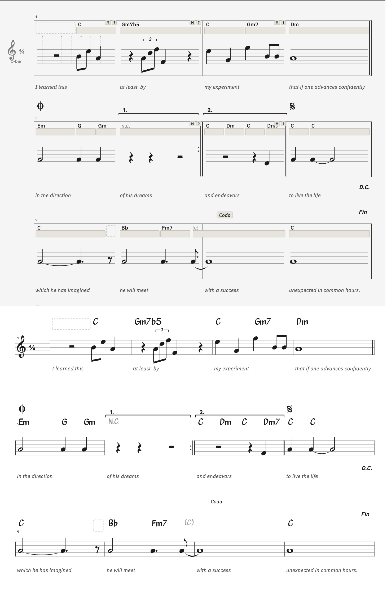
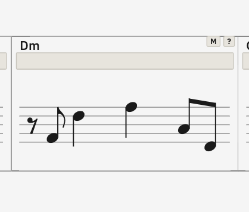

Du baust ein Lead Sheet — Akkorde, ein bisschen Form, auf Wunsch eine grobe Melodie. Drucken, einstecken, spielen.
Nicht im Paket: Audio-Playback, MIDI, MusicXML. Die Beta macht ein gedrucktes Sheet, sonst nichts.

Cmaj7 tippen, Enter.
Klassiker: C · G ·
Am · F — vier Tab-Drücke, fertig.


| Tab | nächster Akkord-Balken |
| Enter | markieren / bestätigen |
| Esc | abbrechen |
| ⌘Z / ⇧⌘Z | rückgängig / wiederherstellen |
| Backspace | löschen |
| V | Volta |
| E | Section-Label |
| R | Wiederholungs-Strich |
| T / S | Text / Schere |
| K | Kompass (Noten mit Pfeiltasten) |
Akkord-Balken, kein Notensystem. Sieht schon nach vier Takten aufgeräumt aus. Das ist der Default.
Mit dem ♩-Knopf oben blendest du eine Rhythmus-Linie ein, die dem Balken folgt.

5-Linien-System mit echten Tonhöhen. Oben in der Toolbar von A auf B flippen.
Optional zeichnet NoteChart automatisch passende Töne aus dem Akkord — als Grundton oder als Dreiklang (experimentell).

Drück K in Modus B. Klick einmal aufs Notensystem — die Preview-Note schwebt da.
Triffst du eine bestehende Note, hängt sich der Kompass dran — Pfeile ändern dann die Note, statt eine neue zu setzen.

Beide Knöpfe sitzen ganz rechts in der Top-Toolbar.

Reihenfolge: Grundton → b/# → Typ → Zahl → /Basston.
C · Cm · Bb · F#m |
Dur, Moll, B-Dur, Fis-Moll |
G7 · Cmaj7 · Cm(maj7) |
Septakkorde |
Csus2 · Csus4 |
Suspended |
Cdim · Caug · Cm7b5 |
Vermindert, übermäßig, halbvermindert |
C7b9 · C7#9 · C7#5 |
Alterationen |
C6/9 · Cadd9 · Bb/G |
Erweiterungen, Slash-Chord |
N.C. | No Chord |
Englische Schreibweise, bitte — H / Es / Fis kommen erst später.
Linker oder rechter Rand des Balkens hat eine Drag-Zone. Beim Loslassen snappt's aufs Raster.
Ein Balken darf über den Taktstrich gehen. Akkord-Name steht nur im ersten Takt.
Taste A zyklt einen kleinen Stub des Akkords in den Vortakt — für Synkopen.
Tool aktivieren, auf einen Balken klicken → wird am Klick-Punkt geteilt.
Ausschneiden, Kopieren, Im PDF ausblenden, „Als Textblock (AT)" aussetzen.
Klick = Auswahl. Drag im leeren Bereich = Rubberband. Backspace löscht.
Auge-Symbol oben in der Song-Toolbar öffnet das Popup.
Pro Takt überschreiben: Rechtsklick in einen Takt → Darstellung: → gewünschten Modus wählen.
Notenwert wählen, dann 3. Die nächsten drei Klicks gehören zur Triole — die ⌜3⌝-Klammer erscheint automatisch.
| Aktiver Wert | + 3 | Ergebnis |
|---|---|---|
| Viertel (4) | 3 | Viertel-Triole |
| Achtel (8) | 3 | Achtel-Triole |
| Sechzehntel (6) | 3 | 1/16-Triole |
Esc oder ein neuer Notenwert bricht den Triolen-Modus ab.
Immer das gleiche Schema: Tool aktivieren → schwebender Cursor → auf Takt klicken → fertig. Esc bricht ab, gleicher Shortcut nochmal schaltet aus.
| Tool | Shortcut | Wofür |
|---|---|---|
| Wiederholungen | R | ‖: Anfang oder :‖ Ende |
| Section-Label | E | A / B / Intro / Bridge / Chorus … |
| Volta | V | 1. + 2. Endung über zwei Takt-Bereiche |
| Da Capo | D | D.C. / D.S. / al Fine / al Coda / Fine |
| Segno / Coda | G / C | Sprung-Marker |
| No Chord | X | akkordfreier Takt |
| Strich | I | Doppel- oder Final-Strich |
Aufs Blatt klicken → Edit-Box. Enter committet, ⇧+Enter ist Zeilenumbruch. Rechtsklick gibt dir die Größe (Klein / Mittel / Groß).
Die Box bleibt am Takt verankert.
Song-weites Flyout. Takte trennst du mit : ,
leere Takte mit : : . Max. 4 Tokens pro Zeile.
⌘+Enter übernimmt.
Wenn ein Takt manuell eingegebene Noten enthält, zeigt NoteChart oben rechts ein kleines „M".
Daneben sitzt ein ? mit Erklärung — und ein Knopf „Manuelle Noten entfernen", falls du wieder zum Akkord-Default zurück willst.

Damit du nicht suchst — alles für nach v1.0:
docs/notechart-bedienungsanleitung.mddocs/notechart-quicktour.md ·
docs/notechart-5min.md